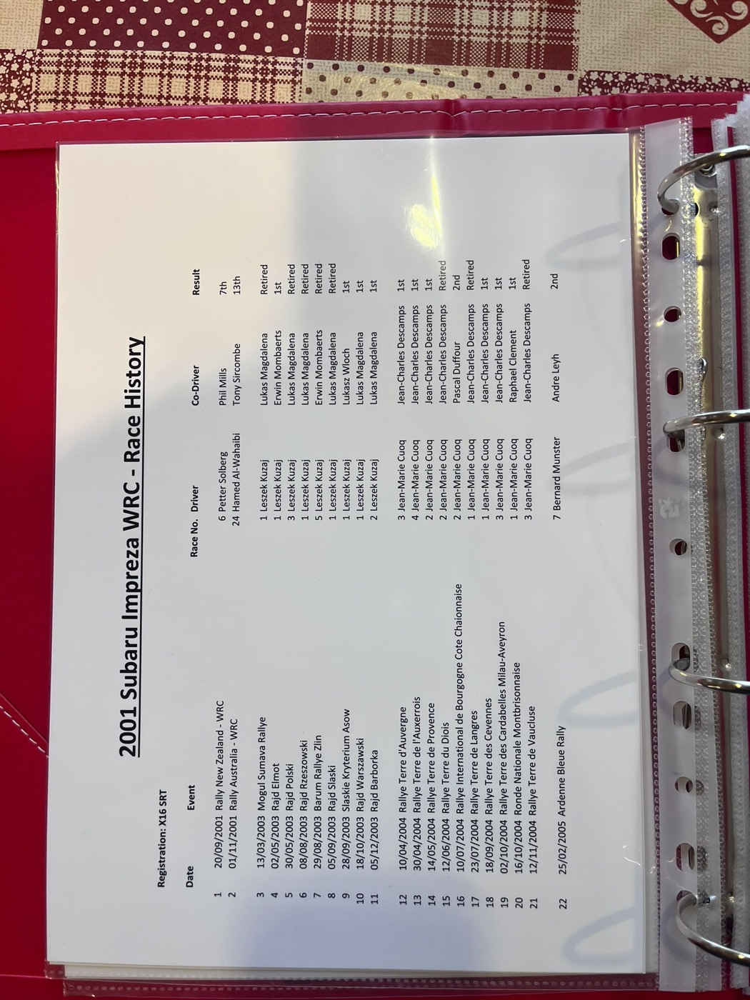
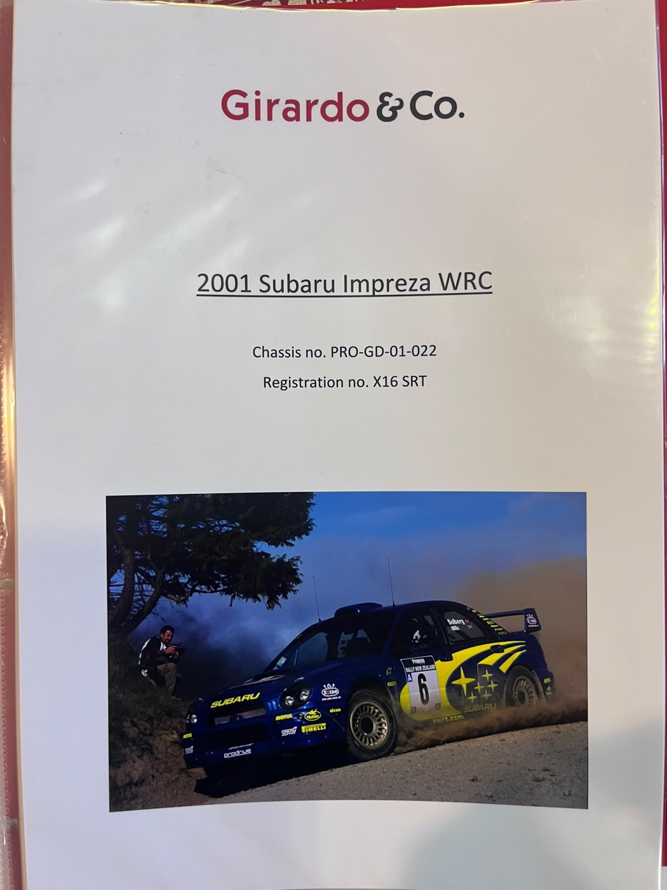

Questa pagina ricostruisce, documento per documento, ciò che si può dire — e ciò che non si può ancora dire —
su questa vettura. Il numero di telaio compare in quattro forme leggermente diverse a seconda del documento
e dell'epoca: PROGD01022 nei documenti ufficiali britannici (DVLA, MSA, MOT), PRO-GD-01-022
sulla scheda di copertina del dossier di vendita Girardo & Co, PROGDA01022 nel testo descrittivo
dello stesso dossier, e #22 nel database specialistico eWRC-results.com. Nessuna fonte le mette mai
a confronto tra loro: sono ritenute la stessa identità, trascritta da persone diverse in momenti diversi, ma
questo resta un elemento osservato, non un fatto verificato in una fonte primaria unica.
Da dove siamo partiti
Un raccoglitore di documenti, non una storia già scritta
Il punto di partenza di questa ricerca non è stato un racconto, ma un insieme eterogeneo di carte e fotografie fornite dal cliente — alcune ufficiali, altre commerciali, altre ancora semplici stampe conservate in un raccoglitore.
Il materiale di partenza comprendeva: due domande di immatricolazione DVLA (modulo V62, 2014), un libretto di gara MSA (Motor Sports Association) n. 34638, quattro certificati MOT (2014–2018), una fattura di officina per la revisione del cambio (BGM Sport, 2018), due certificati V5C di proprietà (2019), il dossier di vendita del rivenditore Girardo & Co con relativa scheda fotografica di copertina, un foglio dattiloscritto con lo storico gare 2001–2005, e un pacchetto di provini a contatto dell'agenzia fotografica McKlein Motorsport Photography relativi al Rally di Nuova Zelanda 2001.
Nessuno di questi documenti, da solo, racconta l'intera storia della vettura. Alcuni si sovrappongono, altri si integrano, uno risultava persino archiviato con un nome sbagliato (un file etichettato come modulo DVLA V62 conteneva in realtà la seconda pagina della fattura BGM Sport). Il lavoro è partito da qui: leggere ogni documento per il suo contenuto reale, non per l'etichetta con cui era stato archiviato.

Fornito dal clienteFoglio di storico gare 2001–2005, targa X16 SRT: data, evento, pilota, co-pilota e risultato per ventidue gare. Autore e data di compilazione originali non dichiarati — è un documento secondario, non un referto ufficiale di gara.
La ricerca
Verificare, non solo raccontare
Il metodo seguito distingue sempre tra un'affermazione e la prova che la sostiene — e tra livelli diversi di prova: identificare con certezza il telaio è un'affermazione più forte che identificare il modello o l'evento in cui ha corso una vettura simile.
Il lavoro si è svolto in tre fasi successive. Prima, l'analisi indipendente di ogni documento fornito dal cliente, senza dare per buone le didascalie o le narrazioni già scritte. Poi, la verifica incrociata con fonti pubbliche esterne — fotografie di rally club britannici trovate sul web, voci enciclopediche sugli eventi WRC del 2001. Infine, una ricerca autenticata su un database specialistico di risultati rally (eWRC-results.com) e su un archivio storico di stampa (Newspapers.com), per cercare conferme — o smentite — indipendenti dal materiale fornito dal cliente e dalla narrazione del rivenditore.
Una regola ha guidato tutto il lavoro: due pagine dello stesso sito non contano come due fonti indipendenti. Quando un database ripete un'informazione già vista altrove sullo stesso sito, non viene contata come una nuova conferma — un principio che si è rivelato importante più di una volta in questo caso specifico (si veda "Cosa abbiamo scoperto").
Ogni affermazione in questa pagina porta un'etichetta di stato: Verificato quando più fonti indipendenti concordano, Supportato quando le fonti disponibili concordano ma non sono pienamente indipendenti tra loro o restano di livello generale, Ricerca aperta quando la domanda resta senza risposta definitiva.
Cosa abbiamo scoperto
Quattro nodi al centro del caso
L'attribuzione del telaio alla vettura del 2001
Supportato
Si riteneva
Che il telaio PROGD01022 sia la vettura che ha debuttato al Rally di Nuova Zelanda 2001 con Petter Solberg.
Trovato
Il database indipendente eWRC-results.com associa autonomamente "Chassis #22" alla targa X16 SRT, con uno storico gare 2001–2017 molto più dettagliato di quello fornito dal cliente.
A favore
Il dossier di vendita Girardo & Co e, ora, un secondo database indipendente concordano sulla stessa identificazione.
Contro
Nessun documento del 2001–2013 — fotografia, certificato, referto — riporta mai un numero di telaio. Tutti i documenti che citano "PROGD01022" risalgono al 2014 in avanti.
Perché questo stato
Due fonti secondarie di organizzazioni diverse concordano, il che è più solido di un'unica affermazione del venditore — ma eWRC non cita la propria fonte, e non si può escludere che il compilatore del dossier Girardo & Co abbia a sua volta consultato eWRC.
Servirebbe
Una fotografia della targhetta telaio fisica, o un documento di allocazione dell'epoca da Prodrive / Subaru World Rally Team.
Il piazzamento al Rally di Nuova Zelanda 2001
Verificato
Si riteneva
Che la vettura #6 di Solberg/Mills avesse chiuso 7ª, secondo il foglio storico del cliente e il dossier Girardo.
Trovato
Una voce enciclopedica riportava invece il 6° posto — una discrepanza tra fonte primaria/secondaria del cliente e una fonte terziaria esterna.
A favore
Il foglio storico del cliente, la narrazione Girardo, la pagina dei risultati di tappa di eWRC-results.com e — elemento decisivo — la classifica finale ufficiale della stessa gara su eWRC concordano tutte sul 7° posto, con tempo e distacco identici (3:49:43,8, +2:15,8).
Contro
Solo la voce enciclopedica, una fonte terziaria non specialistica, riportava il 6° posto.
Perché questo stato
Quattro fonti convergenti, di cui una è la classifica ufficiale della gara stessa: la soglia più alta di verifica in questo caso.
Servirebbe
Nulla: la domanda è chiusa.
La stagione francese 2004 di Jean-Marie Cuoq
Supportato
Si riteneva
Che la vettura, passata a Jean-Marie Cuoq, fosse arrivata 2ª nel campionato francese "terra" 2004 con 5 vittorie su 8 gare.
Trovato
Un primo confronto con il database eWRC sembrava contraddire questo dato: un conteggio per targa restituiva 10 gare e 6 vittorie nello stesso anno — un'apparente contraddizione.
A favore / indagine
Analizzando direttamente la pagina del pilota su eWRC-results.com, la classifica di stagione calcolata dal sito stesso, filtrata correttamente sul solo campionato "Francia Terra", indica: 2° posto, 5 vittorie, 8 partenze — un riscontro esatto con i documenti del cliente.
Contro
Il conteggio iniziale di 10 gare/6 vittorie non era falso: mescolava semplicemente due campionati francesi diversi (Coppa di Francia e Campionato Terra) disputati con la stessa vettura nello stesso anno.
Perché questo stato
La contraddizione iniziale è stata quindi un errore di metodo in una nostra elaborazione precedente, non un vero conflitto tra fonti — una volta corretto il filtro, i dati tornano identici. Un promemoria di quanto sia facile costruire un falso conflitto aggregando dati in modo scorretto.
Servirebbe
Un documento primario della federazione francese (FFSA) per portare questo dato a "Verificato".
L'assenza di un documento fisico del telaio 2001–2013
Ricerca aperta
Si riteneva
Che, tra i molti documenti raccolti, ne emergesse almeno uno risalente al periodo di gara 2001–2013 con un riferimento al numero di telaio.
Trovato
Nessuno. Ogni fotografia e documento di quel periodo mostra livrea, numero di gara e piloti — mai una targhetta telaio o un numero di matricola.
A favore
Una ricerca mirata su Newspapers.com, con intervallo di date circoscritto a entrambi gli eventi del 2001, non ha trovato alcun articolo dell'epoca che citi un numero di telaio o di matricola — un esito negativo, ma ottenuto con una ricerca sistematica, non per mancato tentativo.
Contro
—
Perché questo stato
È il singolo elemento mancante più importante dell'intero caso: finché non emerge un documento datato 2001–2013 con un riferimento al telaio, l'attribuzione resta un'inferenza solida ma non una prova diretta.
Servirebbe
Una fotografia della targhetta telaio fisica, un archivio di allocazione Prodrive/Subaru dell'epoca, oppure l'accesso all'archivio riservato dell'agenzia fotografica McKlein.
La storia ricostruita
Una cronologia, con i suoi margini di incertezza segnati dove ricorrono
Il periodo 2014–2019 poggia su una catena di documenti ufficiali britannici solida e continua. Il periodo di gara 2001–2013, invece, è ricostruito da un foglio storico e da una narrazione commerciale, oggi rafforzate da un database specialistico indipendente — ma resta, nel suo insieme, un livello di prova diverso: si veda l'etichetta di stato accanto a ciascuna voce.
2001
Supportato Secondo il dossier del rivenditore e il foglio storico del cliente, la vettura #6 del Subaru World Rally Team, con Petter Solberg e Phil Mills, debutta al Rally di Nuova Zelanda (20–23 settembre), chiudendo Verificato 7ª assoluta. Nella stessa stagione, la vettura #24, iscritta come "Oman Arab World Rally Team" con Hamed Al-Wahaibi e Tony Sircombe, corre il Telstra Rally Australia, 13ª assoluta — dato ora confermato in modo indipendente dal database eWRC. Un ritaglio del Sydney Morning Herald del 2 novembre 2001 conferma che il Rally Australia si è effettivamente disputato in quelle date, senza però nominare vettura o piloti.
2003
Supportato La vettura passa a Leszek Kuzaj (Polonia): 3 vittorie assolute, confermate indipendentemente da eWRC-results.com; il 3° posto nel campionato polacco resta invece su un'unica fonte.
2004
Supportato Passa a Jean-Marie Cuoq (Francia): 2° nel campionato "Terra" francese, 5 vittorie su 8 gare — confermato, dopo un'indagine più approfondita, dalla pagina del pilota su eWRC-results.com (si veda "Cosa abbiamo scoperto").
2005–06
Supportato Corre nel Benelux con più equipaggi (Munster/Droeven, Groenewoud/van den Heuvel) — un periodo confermato indipendentemente da eWRC, ma assente dalla narrazione dello stesso rivenditore Girardo & Co, segno che quella narrazione è una ricostruzione parziale, non l'unica fonte disponibile.
2014
Verificato Immatricolata nel Regno Unito con targa X16 SRT a nome di John Neville "Nev" Jones; inizia una campagna di rally club gallesi (2014–2017) con "Chris Davies" come iscrivente/agente — la ricostruzione meglio documentata dell'intero caso, confermata anche da due fotografie web indipendenti che mostrano targa, nomi sulle portiere e numeri di gara coincidenti con i documenti.
2016
Verificato La proprietà passa a EMMEPI SRL (Italia).
2018
Verificato Una fattura di BGM Sport (Brackley, UK) per la revisione del cambio viene intestata a Girardo & Co Private Sales — la vettura è ormai nella disponibilità del rivenditore.
2019
Verificato Un V5C registra Girardo & Co come intestatario, poi un secondo V5C trasferisce la proprietà ad Andrea Saccheggiani, allo stesso indirizzo di Girardo & Co — una coincidenza di indirizzo il cui significato resta da chiarire (si veda "Contraddizioni e ricerca aperta").
Le evidenze
I documenti alla base di ogni affermazione
Un elenco sintetico dei documenti primari raccolti. Due di essi — il libretto di gara MSA e un certificato V5C — non sono riprodotti in questa pagina perché riportano l'indirizzo di residenza privato dei rispettivi intestatari; le informazioni rilevanti ai fini della ricostruzione sono comunque incluse nel racconto sopra.
Due domande DVLA (modulo V62)
17 marzo e 17 maggio 2014. Entrambe riportano targa e numero di telaio insieme — la base della catena di identità britannica.
Libretto di gara MSA n. 34638
Intestato a John Nev Jones, con Chris Davies come iscrivente. Registra anche il trasferimento a EMMEPI SRL (agosto 2016). Non riprodotto per motivi di riservatezza.
Quattro certificati MOT
2014, 2015, 2016 e 2018: confermano la continuità targa/telaio nel tempo.
Fattura BGM Sport (BGM/8693)
19 dicembre 2018, revisione del cambio, intestata a Girardo & Co Private Sales.
Due certificati V5C
2019: Girardo & Co come intestatario, poi Andrea Saccheggiani. Il secondo non è riprodotto per motivi di riservatezza.
Dossier di vendita Girardo & Co
Scheda di copertina e testo descrittivo. Contiene l'affermazione — non verificata in modo indipendente a livello di telaio — che "questa Subaru Impreza WRC 2001, telaio 022, ha debuttato in gara al Rally di Nuova Zelanda". È l'affermazione più incisiva dell'intero caso, ed è opportuno leggerla per quello che è: la dichiarazione di un venditore interessato, non un accertamento di provenienza indipendente.
Foglio storico gare (2001–2005)
Documento dattiloscritto secondario, autore non dichiarato.
Database eWRC-results.com — "Cars history"
Fonte indipendente dal rivenditore, con uno storico di 38 partecipazioni (2001–2017) per la targa X16 SRT, che cita autonomamente "Chassis #22". Non dichiara la propria fonte primaria.
Archivio visivo
Fotografie, con la loro provenienza dichiarata
Ogni fotografia qui sotto riporta la propria origine, il livello di attribuzione che consente e — dove necessario — un avvertimento esplicito. Alcune immagini restano interessanti anche senza aver dimostrato nulla di conclusivo: le abbiamo mantenute proprio per questo.

Fornita dal clienteCopertina del dossier di vendita Girardo & Co: "Chassis no. PRO-GD-01-022 / Registration no. X16 SRT". Attribuzione: dichiarazione del venditore, non verificata indipendentemente a livello di telaio.Fornita dal clienteProvini a contatto, agenzia McKlein Motorsport Photography — Rally di Nuova Zelanda 2001, vettura #6. Attribuzione: livello modello/evento; nessuna matricola telaio visibile in queste immagini.
Trovata durante la ricercaRally club britannico, 2014–2017. Targa X16 SRT leggibile. Attribuzione: livello targa, fonte indipendente dal cliente.Trovata durante la ricercaNomi sulle portiere "Nev Jones" / "C. Davies", numero di gara corrispondente ai documenti. Fotografia di Shaun Schofield. Attribuzione: livello targa, fonte indipendente.
Quello che non torna ancora, o non torna del tutto
"Karl Davies" o "Chris Davies"? Ricerca aperta
Il secondo modulo V62 (maggio 2014) cita un "Karl Davies" allo stesso indirizzo, telefono ed email di John Nev Jones. Tutti gli altri documenti — libretto di gara MSA, foglio storico gare, fotografie web — citano invece "Chris Davies". Potrebbe trattarsi di un errore di trascrizione, di una correzione amministrativa, o di due persone diverse legate allo stesso equipaggio. Nessun documento in nostro possesso risolve la domanda: è un caso in cui serve un giudizio umano, non un'ulteriore ricerca documentale.
Andrea Saccheggiani e Girardo & Co: coincidenza o legame? Ricerca aperta
Il V5C del 2019 registra Andrea Saccheggiani come intestatario, allo stesso indirizzo di Girardo & Co Private Sales (11A Hannell Road, Fulham, Londra). Una verifica al registro delle imprese britannico (Companies House) non ha trovato alcuna carica societaria a nome Saccheggiani presso le società Girardo & Co — un riscontro negativo che esclude un legame formale come amministratore, ma non chiarisce se si tratti di un socio informale, di un indirizzo di comodo per la transazione, o di una coincidenza.
Quattro modi di scrivere lo stesso numero di telaio
PROGD01022, PRO-GD-01-022, PROGDA01022, #22. Nessuna fonte li mette mai a confronto esplicitamente. È un'osservazione, non necessariamente una contraddizione: è compatibile sia con semplici trascrizioni imprecise di uno stesso numero, sia — nell'ipotesi meno probabile ma non escludibile — con un'incertezza reale sull'identità del telaio.
Una narrazione commerciale incompleta
Il dossier di vendita di Girardo & Co non menziona affatto il periodo 2005–2006 in Benelux, oggi confermato in modo indipendente da eWRC-results.com. Questo indica che la narrazione del rivenditore è stata compilata da fonti interne parziali, non dallo stesso insieme di dati più granulare del foglio storico gare o del database eWRC — un segnale utile per pesare quanto affidamento dare al resto della stessa narrazione.
Cosa cercheremmo adesso
Il confine tra ricerca aperta e accesso specialistico
Questa ricerca ha raggiunto un punto in cui ulteriori ricerche generiche in rete non aggiungono più nulla di sostanziale. Quello che resta da fare richiede, in ogni caso, un accesso diverso: archivi non pubblici, rapporti professionali, o l'ispezione fisica della vettura.
Una fotografia della targhetta telaio fisica, o un documento di allocazione Prodrive/Subaru World Rally Team dell'epoca. È l'unico elemento in grado di portare l'attribuzione centrale del caso da "Supportato" a "Verificato" — o di smentirla. Richiede l'ispezione diretta della vettura o un rapporto professionale con Prodrive/Subaru Motorsport Heritage.
L'archivio riservato ai clienti dell'agenzia fotografica McKlein Motorsport Photography. Potrebbe contenere fotografie dell'area verifiche tecniche del 2001, dove una targhetta telaio sarebbe potenzialmente visibile. Richiede una relazione commerciale con l'agenzia, non un accesso tecnico.
Gli archivi primari della federazione francese (FFSA). Confermerebbero in modo definitivo la stagione 2004 di Jean-Marie Cuoq, oggi supportata da un database specialistico ma non da un documento federale primario.
Gli archivi della federazione polacca, o un sito specialistico come juwra.com. Confermerebbero la dicitura esatta del piazzamento 2003 di Leszek Kuzaj (il conteggio vittorie è già confermato indipendentemente).
Registri societari e stampa regionale gallese per il periodo 2014–2017. Potrebbero chiarire la discrepanza "Karl Davies"/"Chris Davies" e il legame tra Andrea Saccheggiani e Girardo & Co — in parte domande di giudizio umano più che di ricerca documentale.
Gli archivi storici di Autosport e Motoring News. Non fanno parte della collezione di Newspapers.com già consultata: restano una pista genuinamente non ancora tentata per la stampa specialistica del 2001.
Revisione Automotive Masterpieces
Che cosa ha reso possibile questa ricostruzione, e che cosa no
L'intera catena di identità e proprietà 2014–2019 — la coppia targa/telaio, la successione dei proprietari da Jones/Davies a EMMEPI SRL, a Girardo & Co, a Saccheggiani — poggia interamente su documenti primari: due moduli DVLA, un libretto di gara, quattro certificati MOT, due V5C, una fattura d'officina. Questo è terreno solido.
La storia di gara 2001–2013, al contrario, non poteva essere stabilita dal solo materiale primario fornito: si basava su un foglio dattiloscritto di autore non dichiarato e su una narrazione commerciale. Ciò che la ricerca esterna ha aggiunto non è stata una conferma generica, ma un secondo database indipendente, compilato da un'organizzazione diversa, con un livello di dettaglio (tappe, ritiri, classi) superiore a entrambe le fonti del cliente — e, soprattutto, due fotografie web indipendenti che da sole costituiscono la prova più solida dell'intero caso, per il periodo 2014–2017: non provenivano né dal cliente né dal rivenditore, ma da una ricerca condotta da zero.
Al tempo stesso, la ricerca ha mostrato dove un'affermazione plausibile e ben scritta —
"questa Subaru Impreza WRC 2001, telaio 022, ha debuttato in gara al Rally di Nuova Zelanda con Petter Solberg"
— resta, nonostante tutto, un'affermazione di un venditore interessato, non un accertamento indipendente. È esattamente il tipo di frase che un processo di sola narrazione riprodurrebbe con sicurezza come fatto, mentre un processo di verifica deve segnalarla per quello che è.
Alcune domande, infine, non ammettono una risposta documentale: se "Karl Davies" e "Chris Davies" siano la stessa persona, se Andrea Saccheggiani abbia un legame professionale con Girardo & Co, quanto peso dare alla narrazione di un venditore che dichiara essa stessa di non garantire l'accuratezza dei propri contenuti. Sono scelte di giudizio, non output di una ricerca — ed è bene che restino visibili come tali, invece di scomparire dietro una conclusione apparentemente netta.